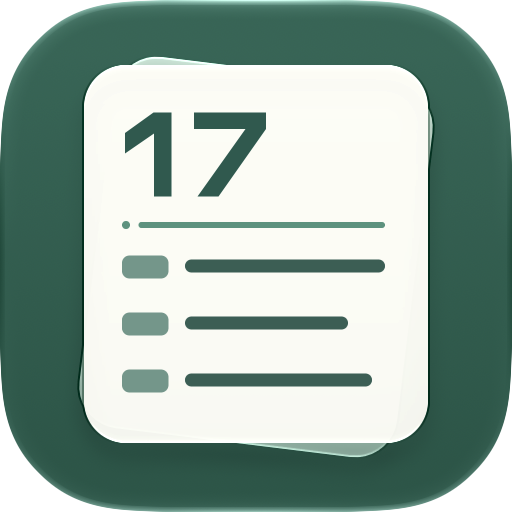

CalendarText
Your real calendar, written as a long note.
Need a hand?
Email billrey@me.com. Include your device, OS version, and what happened. Please leave private event details out unless needed.
Getting started
- Allow Calendar access. CalendarText initially uses your system default calendar.
- Open the calendar name at the top to choose visible calendars and a default for new events.
- Tap a date, type a plan such as “Coffee about 5pm”, and save.
- Tap an event’s time to change its date, time, or calendar. For all-day events, use the chevron menu.
Calendar access is denied
Use “Open system settings” in the app, allow full Calendar access, and return to CalendarText. If a device is managed, its administrator may need to allow access.
Sharing and syncing
Set up shared calendars in Apple Calendar, then enable the same calendar on both devices. Calendar accounts handle network delivery. Undated local ideas and drafts do not sync; you can optionally connect a Reminders list for undated plans.
Approximate and missing times
“About” and “ca” keep their meaning. A missing end uses a labelled 60-minute calendar placeholder. No time means an all-day event.
Privacy
No app account, advertising, or analytics. Read the privacy policy.